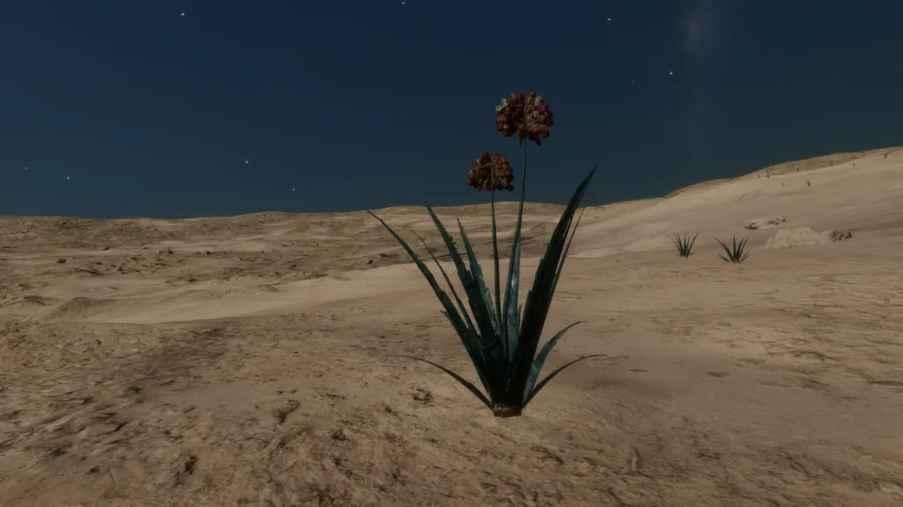
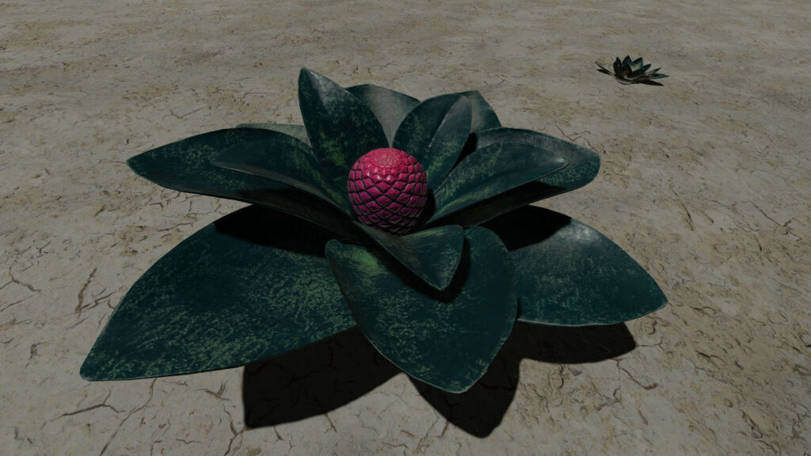
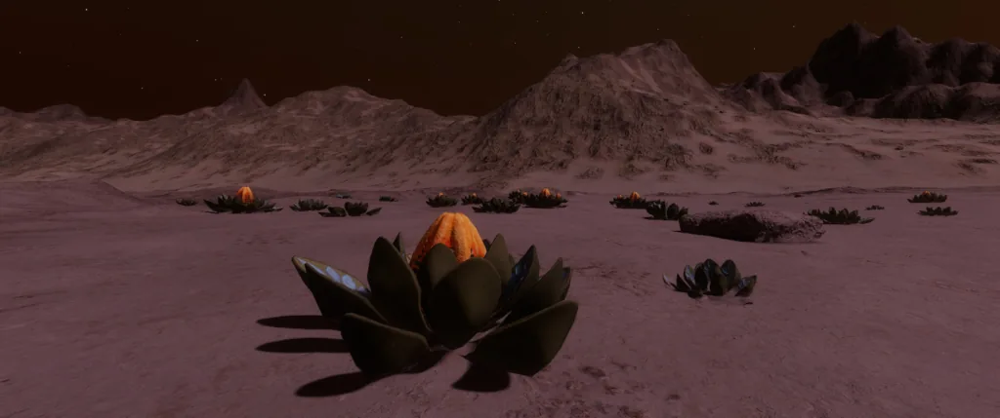
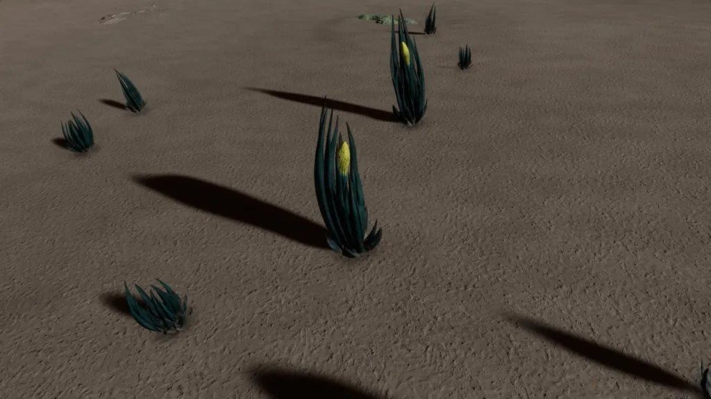

A particularly fine example of Aleoida Laminiae – Emerald. Image courtesy of Cmdr. Arras DeCairo
Extremely hardy photosynthetic organisms that thrive in arid environments. Thick, waxy leaf structures protect them from extreme surroundings, when gaseous exchange becomes unfavourable. The leaves can completely shut off the organism from the atmosphere causing a state of hibernation. The pointed leaves create precipitation slopes, which draw liquids to the heart of the organism. Here they are absorbed through a series of specialised cells and stored in the root structure until needed.
Aleoida of the Arcus and Gravis Species seem to favour flat or slightly lumpy terrain, whereas their fellow Species can populate hilly for Coronamus and Laminiae to almost mountainous terrain for Spica.
Variant Determinant: Stellar Class
Stellar Class and Variant
| Stellar Class | O | B | A | F | G | K | M | L | T | TTS | Ae | Y | W | D | N |
| Variant | Ye | Gr | Te | Tu | Em | Li | Sg | Mv | Am | Gy | In | Oc |
Planetary Body Type: High Metal Content or Rocky
Atmosphere: Ammonia or Carbon Dioxide
Minimum Colonial Separation: 150m
| Species Name | Percentage of recorded Aleoida Population | Vista Genomics Offer Price |
|---|---|---|
| Aleoida Arcus | 21.45% | 7,252,500 |
| Aleoida Coronamus | 28.91% | 6,284,600 |
| Aleoida Gravis | 11.80% | 12,934,900 |
| Aleoida Laminiae | 24.20% | 3,385,200 |
| Aleoida Spica | 13.63% | 3,385,200 |
All data as at 30th September 3311.
For the most up-to-date statistics and Vista Genomics pricing, please visit:
Canonn Bioforge or the data-enriched Codex Regions.

This Aleoida Species has upright clumps of long serrated leaves, which can open up to expose a reproductive organ containing tiny round seeds.
Planetary Body Type: High Metal Content (3%) or Rocky (97%)
Atmosphere: Carbon Dioxide
Volcanism: None
Temperature Pressure Gravity
| Minimum | Average | Mode | Maximum | |
| Temperature (K) | 175.00 | 177.35 | 177.00 | 180.00 |
| Pressure (atm) | 0.016146368 | 0.040551813 | 0.024422522 | 0.098606058 |
| Gravity (G) | 0.04 | 0.14 | 0.12 | 0.27 |
Galactic Arm Preference: No Preference
This Aleoida Species has an interleaved crown of mottled leaves that can grow to head height, with explosive seed pods emerging on long protruding stalks.
Planetary Body Type: High Metal Content (6%) or Rocky (94%)
Atmosphere: Carbon Dioxide
Volcanism: None
Temperature Pressure Gravity
| Minimum | Average | Mode | Maximum | |
| Temperature (K) | 179.44 | 184.16 | 181.00 | 190.00 |
| Pressure (atm) | 0.024472902 | 0.058051847 | 0.035899245 | 0.098688414 |
| Gravity (G) | 0.04 | 0.17 | 0.17 | 0.27 |
Galactic Arm Preference: No Preference

This Aleoida Species has wide flat leaves on a heavy bark base and can reach huge sizes. It can sprout a dome-shaped reproductive organ at its peak.
Planetary Body Type: High Metal Content (35%) or Rocky (65 %)
Atmosphere: Carbon Dioxide
Volcanism: None
Temperature Pressure Gravity
| Minimum | Average | Mode | Maximum | |
| Temperature (K) | 190.00 | 192.37 | 190.10 | 196.25 |
| Pressure (atm) | 0.054417532 | 0.079304038 | 0.074241375 | 0.098690014 |
| Gravity (G) | 0.04 | 0.21 | 0.21 | 0.27 |
Galactic Arm Preference: No Preference

This Aleoida Species has a circle of upturned leaves marked with patterns, surrounding a bright fleshy pod with darker markings which matures in its centre
Planetary Body Type: High Metal Content (11%) or Rocky (89%)
Atmosphere: Ammonia
Volcanism: Insignificant
Temperature Pressure Gravity
| Minimum | Average | Mode | Maximum | |
| Temperature (K) | 152.00 | 166.38 | 171.00 | 176.66 |
| Pressure (atm) | 0.000986991 | 0.002161912 | 0.001082025 | 0.013336214 |
| Gravity (G) | 0.04 | 0.17 | 0.14 | 0.28 |
Galactic Arm Preference: Orion-Cygnus Arm; Sagittarius-Carina Arm including Odin’s Hold and Galactic Centre

This Aleoida Species features long spiky leaves that can reach over two metres high surrounding a single reproductive organ on a long central stalk.
Planetary Body Type: High Metal Content (34%) or Rocky (66%)
Atmosphere: Ammonia
Volcanism: Insignificant
Temperature Pressure Gravity
| Minimum | Average | Mode | Maximum | |
| Temperature (K) | 170.00 | 172.38 | 173.00 | 176.56 |
| Pressure (atm) | 0.000986924 | 0.002539192 | 0.001238502 | 0.013106084 |
| Gravity (G) | 0.04 | 0.18 | 0.16 | 0.28 |
Galactic Arm Preference: NOT Orion-Cygnus Arm or Sagittarius-Carina Arm
 |  |  |  |  |
 |  |  |  |  |
 |  |  |  |  |
 |  |